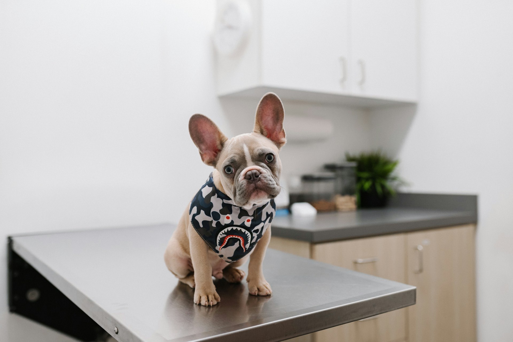

Salud Canina: Consejos de Atención Médica para Perros
Publicado el 15 de abril de 2024
Es fundamental que los dueños de perros comprendan la importancia de la salud canina.
Mantener a tu mascota saludable implica una dieta equilibrada, ejercicio regular y chequeos
veterinarios constantes. Asegúrate de estar al tanto de las vacunas y tratamientos
antiparasitarios para prevenir enfermedades comunes.
Leer más

Consejos e Información sobre la Salud de los Gatos para Dueños de Gatos
Publicado el 13 de abril de 2024
La salud de los gatos es crucial para su bienestar. Es esencial proporcionarles una
alimentación adecuada, así como chequeos veterinarios regulares. También es importante
prestar atención a su comportamiento, ya que los cambios pueden ser signos de problemas de
salud que requieren atención inmediata.
Leer más

Piel Sensible en Perros: Causas y Tratamientos
Publicado el 13 de abril de 2024
Los perros pueden sufrir de piel sensible por varias razones, como alergias o irritaciones.
Es importante identificar la causa y seguir un tratamiento adecuado para evitar el rascado y
el malestar. Consulta a un veterinario para obtener recomendaciones sobre productos
específicos y cuidados necesarios.
Leer más

La Vida Interior Cotidiana de los Gatos
Publicado el 6 de abril de 2024
Los gatos tienen un mundo interior fascinante y lleno de matices. Sus comportamientos pueden
revelar mucho sobre su estado emocional y salud. Comprender a tu gato implica observar sus
hábitos diarios y brindarle un ambiente seguro y estimulante para que pueda prosperar.
Leer más
Cómo Mantener a los Perros Frescos en Verano
Publicado el 6 de abril de 2024
Con las altas temperaturas del verano, es fundamental tomar medidas para mantener a tu perro
fresco. Asegúrate de proporcionar suficiente agua, sombra y evitar paseos durante las horas
más calurosas del día. También considera utilizar productos específicos para ayudar a
regular su temperatura corporal.
Leer más

50 Datos sobre Gatos que Debes Conocer Antes de Tener Uno
Publicado el 5 de abril de 2024
Los gatos son criaturas intrigantes y complejas. Desde su comportamiento hasta sus
necesidades de atención, conocer más sobre ellos te ayudará a ser un mejor dueño. Asegúrate
de investigar sobre sus cuidados, alimentación y cómo hacer que se sientan cómodos en su
nuevo hogar.
Leer más
Mitos sobre Gatos Negros Desmentidos
Publicado el 30 de marzo de 2024
A menudo, los gatos negros enfrentan mitos y supersticiones negativas. Sin embargo, son
animales tan adorables y cariñosos como cualquier otro gato. Adoptar un gato negro puede ser
una experiencia gratificante y liberar a un animal de la injusticia de estos estigmas.
Leer más

10 Cosas que Debes Saber sobre los Rottweilers
Publicado el 28 de marzo de 2024
Los Rottweilers son perros leales y protectores que requieren atención y cuidado. Desde su
necesidad de ejercicio hasta la socialización adecuada, hay mucho que aprender sobre esta
raza. Con un entrenamiento y cuidados adecuados, los Rottweilers pueden ser compañeros
maravillosos y equilibrados.
Leer más